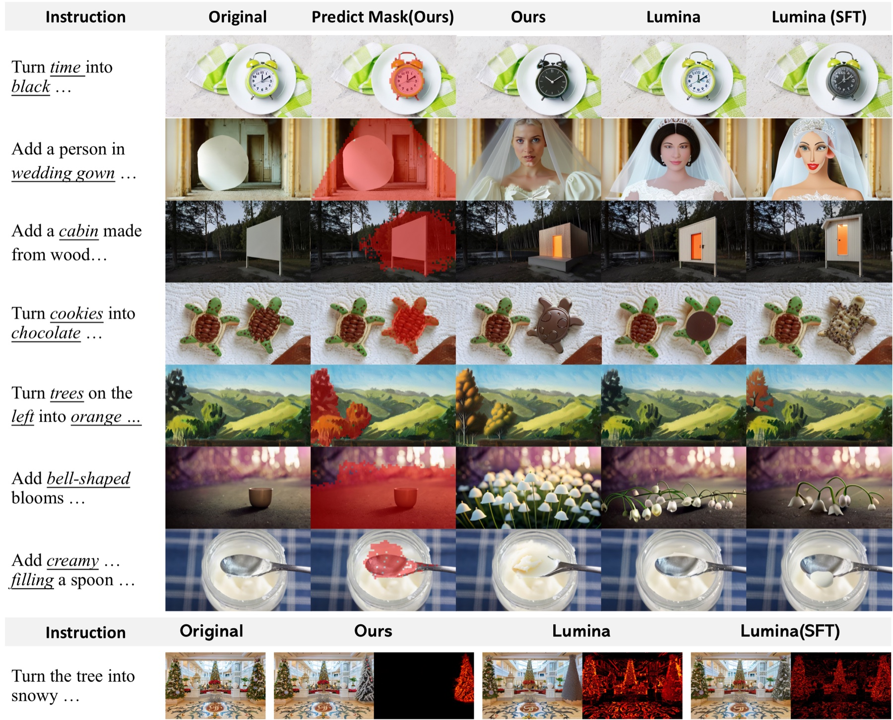

Abstract
Autoregressive models can refine an answer only by regenerating forward — even a one-token fix means redoing the whole sequence. Mask Diffusion Models (MDMs) can instead edit in place, yet existing MDMs never exploit this for multi-turn revision. We propose Reflective Masking (RM), a lightweight post-training method that unlocks this intrinsic ability: the model re-masks its own uncertain tokens and revises them across turns — a native form of test-time scaling, with no architectural changes. We further add History Reference, a parameter-free mechanism that carries the denoising trajectory across revisions. Across text, Sudoku, and image editing, RM consistently beats standard masking-based baselines, positioning it as a basic primitive for reasoning in MDMs.
TL;DR. Autoregressive models can only revise by regenerating forward; mask diffusion models can edit in place — but standard decoding fixes a token once it is revealed and forgets what it previously predicted. Reflective Masking teaches an MDM to re-mask its own uncertain tokens and revise them over multiple turns, and History Reference lets it carry the denoising trajectory forward — both with no architectural changes and no extra parameters.
- 1Reflective Masking as a latent capability. We recast MDM generation as self-initiated, in-place revision — reasoning by editing prior outputs, not just expanding forward.
- 2A lightweight training paradigm. A scalable offline data pipeline activates RM as an intrinsic skill, with no architectural changes — validated on text, Sudoku, and image editing.
- 3History Reference. A parameter-free way to give MDMs a stateful view of their denoising trajectory, improving consistency and avoiding repeated errors.
Results
Reasoning through explicit revision
Three task families, from instruction-rich image editing to open-ended text reasoning. Reflective Masking consistently beats masking-based baselines, and History Reference helps most where the model must explore on its own — all trained in about 5 hours on 2×H100.
Sudoku — structured error correction
A tiny from-scratch MDM (0.81M params) recovers 9×9 boards with 4–20 corrupted cells by iterative re-masking. History Reference (HR) sharply cuts repeated mistakes and rule conflicts; adding History Embedding Rotation (HER) tops every metric.
| Variant | Exact Accuracy % ↑ |
Valid Rate % ↑ |
Replay Mistake % ↓ |
Conflict Cells /board ↓ |
|---|---|---|---|---|
| RM (no History Reference) | 82.4 | 86.6 | 0.57 | 0.578 |
| RM + HR | 91.4↑9.0 | 91.8↑5.2 | 0.07↓0.50 | 0.300↓0.278 |
| RM + HR + decay | 89.4↑7.0 | 89.6↑3.0 | 0.07↓0.50 | 0.362↓0.216 |
| Ours — RM + HR + decay + HER | 93.4↑11.0 | 93.6↑7.0 | 0.03↓0.54 | 0.236↓0.342 |
Quantitative results on Sudoku revision. Δ is the change versus the RM (no History Reference) baseline; bold marks the best value per column.
Image editing — localized, instruction-guided revision
With a 7B multimodal backbone (Lumina-DiMOO), Reflective Masking localizes the edit and changes only that region, leaving the rest of the image untouched — outperforming masking-based baselines.

Text reasoning — self-correction with no answer hints
On open-ended math and code (LLaDA backbone), the model re-masks uncertain intermediate tokens and revises them as context resolves — beating both the base model and vanilla SFT.

| Benchmark | Category | LLaDA % |
Vanilla SFT % |
Ours (RM) % |
Δ |
|---|---|---|---|---|---|
| MATH500 | Math | 19.4 | 22.4 | 24.8 | ↑2.4 |
| MBPP | Code | 28.0 | 30.6 | 39.4 | ↑8.8 |
| ARC-Challenge | MCQA | 73.7 | 81.3 | 86.1 | ↑4.8 |
Performance across benchmarks. Δ is the improvement over Vanilla SFT; bold marks the best value per row.
| Minerva MATH | Algebra | Count. & Prob. | Geometry | Interm. Alg. | Num Theory | Prealgebra | Precalc | Aggregate |
|---|---|---|---|---|---|---|---|---|
| Vanilla SFT (%) | 28.90 | 17.72 | 20.67 | 13.07 | 17.41 | 36.28 | 14.10 | 22.62 |
| Ours RM (%) | 29.49 | 18.35 | 20.67 | 14.40 | 21.67 | 38.00 | 16.67 | 24.10 |
| Δ (%) | ↑0.59 | ↑0.63 | 0 | ↑1.33 | ↑4.26 | ↑1.72 | ↑2.57 | ↑1.48 |
Per-subject breakdown on Minerva MATH; Reflective Masking improves on nearly every category.
Method
Reflective Masking & History Reference
Each position takes one of three actions per step: Reveal a confident prediction, Reflectively Mask an uncertain one for another try, or Reserve it. Masking becomes a model-driven decision, so the model can revisit and fix its earlier predictions across turns.
History Reference (HER) accumulates per-step states at the embedding level, giving the model access to its own trajectory — what it predicted and what it already revised — with no extra parameters and no longer attention sequences.

Training
Activating Reflective Masking, offline
RM is taught offline, with no online rollouts. From a clean target we sample a mask, take one MDM forward pass, and draw plausible wrong tokens to build a pseudo-trajectory that matches the model's own distribution. A combined Reveal + RM + Keep loss then teaches when to commit, when to re-mask, and when to leave a token alone.

Citation
BibTeX
@inproceedings{anonymous2026reflective,
title = {Multi-Turn Reflective Masking Elicits Reasoning in Mask Diffusion Models},
author = {Anonymous},
booktitle = {Submitted to Advances in Neural Information Processing Systems (NeurIPS)},
year = {2026},
note = {Under double-blind review}
}